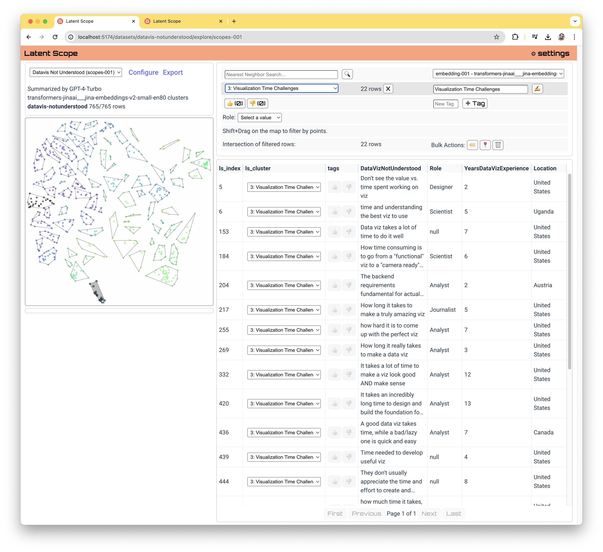

Latent Scope
Latent Scope is an open source tool for interactively curating unstructured data. The tool enables a repeatable process for embedding, projecting, clustering, summarizing and visualizating text data.
Getting started
Follow the guides to get started:
Example Analysis
What can you do with Latent Scope? The following examples demonstrate the kinds of perspective and insights you can gain from your unstructured text data.
- Explore free-responses from surveys in this datavis survey analysis
- Cluster thousands of GitHub issues and PRs
- Sort through two hundred years and tens of thousands of US Federal laws
Inputs and Outputs
To use Latent Scope you will need some data to input. This can be in the form of a CSV file, parquet file or a Pandas DataFrame. Currently, the focus of Latent Scope is unstructured text data, so you will need to choose a column that will be put through the process.

The process will then go through a series of steps that result in a scope, a data format that captures the output of the process in a handy parquet file with a JSON metadata file.
Design Principles
This tool is meant to be a part of a broader data workflow, a lens that helps you see things in your data that you wouldn't otherwise have. That means it needs to be easy to get data in, and easily get useful data out.
-
Flat files All of the data that drives the app is stored in flat files. This is so that both final and intermediate outputs can easily be exported for other uses. It also makes it easy to see the status of any part of the process.
-
Remember everything This tool is intended to aid in research, the purpose is experimentation and exploration. I developed it because far too often I try a lot of things and then I forget what parameters lead me down a promising path in the first place. All choices you make in the process are recorded in metadata files along with the output of the process.
-
It's all about the indices We consider an input dataset the source of truth, a list of rows that can be indexed into. So all downstream operations, whether its embeddings, pointing to nearest neighbors or assigning data points to clusters, all use indices into the input dataset.